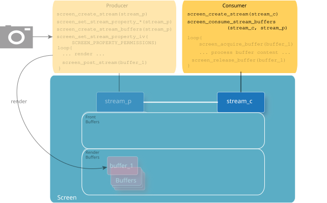
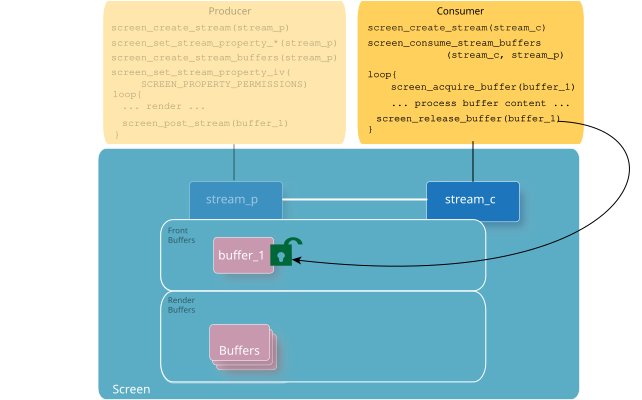

The consumer takes content from a producer to perform additional processing.
The consumer takes content from a producer and performs some form of processing with it (e.g., image processing, compositing). It could also eventually display the content from the producer. Generally, you need to perform the following steps in your consumer application to acquire the content from the producer:
Call screen_create_stream() to create a stream for the consumer. For example:
...
screen_context_t screen_cctx;
screen_create_context(&screen_cctx, SCREEN_APPLICATION_CONTEXT);
...
/* Create the consumer's stream */
screen_stream_t stream_c;
screen_create_stream(&stream_c, screen_cctx);
...
The consumer needs to access the stream that it's taking content from. The consumer gets access to a producer's stream when the producer grants the access by setting the permissions on its stream. When the producer sets its SCREEN_PROPERTY_PERMISSSIONS property to grant the consumer access, the consumer receives a SCREEN_EVENT_CREATE event. On the contrary, when a consumer loses access to a stream (by way of the producer changing permissions on its stream), the consumer receives a SCREEN_EVENT_CLOSE event. We recommend that when the consumer receives a SCREEN_EVENT_CLOSE event for a producer stream that it's connected to, it complete its processing, release any acquired buffers, and then free up the resources that were locally allocated to track this stream (i.e., call screen_destroy_stream() on your reference to the producer stream)
Similar to managers, consumers need an event-handling loop to look for, and handle, among others, the SCREEN_EVENT_CREATE and SCREEN_EVENT_CLOSE events when the object type is a stream.
...
screen_event_t event;
int stream_p_id = -1;
screen_stream_t stream_p = NULL;
screen_buffer_t acquired_buffer; /* Buffer that's been acquired from a stream */
/* Create an event so that you can retrieve an event from Screen. */
screen_create_event(&event);
while (1) {
int event_type = SCREEN_EVENT_NONE;
int object_type;
/* Get event from Screen for the consumer's context. */
screen_get_event(screen_cctx, event, -1);
/* Get the type of event from the event retrieved. */
screen_get_event_property_iv(event, SCREEN_PROPERTY_TYPE, &event_type);
/* Process the event if it's a SCREEN_EVENT_CREATE event. */
if (event_type == SCREEN_EVENT_CREATE) {
/* Determine that this event is due to a producer stream granting permissions. */
screen_get_event_property_iv(event, SCREEN_PROPERTY_OBJECT_TYPE, &object_type);
if (object_type == SCREEN_OBJECT_TYPE_STREAM) {
/* Get the handle for the producer's stream from the event. */
screen_get_event_property_pv(event, SCREEN_PROPERTY_STREAM, (void **)&stream_p);
if (stream_p != NULL) {
/* Get the handle for the producer's stream ID from the event.
* If there are multiple producers in the system, consumers
* can use the producer's stream ID as a way to verify whether the
* SCREEN_EVENT_CREATE event is from the producer that the consumer
* is expecting. In this example, we assume there's only one
* producer in the system.
*/
screen_get_stream_property_iv(stream_p, SCREEN_PROPERTY_ID, &stream_p_id);
...
}
}
}
if (event_type == SCREEN_EVENT_CLOSE) {
/* Determine that this event is due to a producer stream denying permissions. */
screen_get_event_property_iv(event, SCREEN_PROPERTY_OBJECT_TYPE, &object_type);
if (object_type == SCREEN_OBJECT_TYPE_STREAM) {
/* Get the handle for the producer's stream from the event. */
screen_get_event_property_pv(event, SCREEN_PROPERTY_STREAM, (void **)&stream_p);
if (stream_p != NULL) {
/* Get the handle for the producer's stream ID from the event.
* If there are multiple producers in the system, consumers
* can use the producer's stream ID as a way to verify whether the
* SCREEN_EVENT_CREATE event is from the producer that the consumer
* is expecting. In this example, we assume there's only one
* producer in the system.
*/
screen_get_stream_property_iv(stream_p, SCREEN_PROPERTY_ID, &stream_p_id);
...
/* Release any buffers that have been acquired. */
screen_release_buffer(acquired_buffer);
...
/* Deregister asynchronous notifications of updates, if necessary. */
screen_notify(screen_cctx, SCREEN_NOTIFY_UPDATE, stream_p, NULL);
...
/* Destroy the consumer stream that's connected to this producer stream. */
screen_destroy_stream(stream_c);
...
/* Free up any resources that were locally allocated to track this stream. */
screen_destroy_stream(stream_p);
...
}
}
}
...
}
screen_destroy_event(event);
...
Once the consumer receives the SCREEN_EVENT_CREATE event from the producer stream, the consumer calls screen_consume_stream_buffers(). This function connects the consumer's stream to the producer's stream. You must pass in 0 to ensure that the consumer shares the same number of buffers that the producer has. For example:
...
screen_consume_stream_buffers(stream_c, 0, stream_p);
...

After the consumer's stream is connected with the producer's stream, the consumer's stream inherits certain stream properties from the producer's stream. These properties are:
The consumer can undo the connection between its stream and the producer's stream by calling screen_destroy_stream_buffers() on the consumer's stream.
Call screen_acquire_buffer() to acquire the front buffer from the producer. For example:
screen_buffer_t buffer_1;
...
while (1) {
screen_acquire_buffer(&buffer_1, stream_c, NULL, NULL, NULL, 0);
...
The function screen_acquire_buffer() returns the front buffer available from the producer's stream. It also returns the regions of the buffer that's been updated by the producer.
Depending on the mode of the producer's stream, there may be multiple front buffers available. The consumer can call screen_acquire_buffer() multiple times to acquire each of the available front buffers. The consumer isn't required to release any of the acquired buffers before calling screen_acquire_buffer() again. However, note that the consumer can block the producer if it continues to acquire buffers without releasing them.
By default, screen_acquire_buffer() blocks until there's a front buffer available to acquire. However, if you call screen_acquire_buffer() with its flags parameter set to SCREEN_ACQUIRE_DONT_BLOCK, the function returns immediately. If no front buffer is available at the time, then the buffer pointer that's returned is set to NULL.
It's up to the consumer to handle the case when there's no new front buffer available. In most cases, the consumer keeps track of the previously acquired buffer (or buffers), or it doesn't release the acquired buffer until it can acquire a new front buffer (i.e., release the previously acquired buffer only after a call to screen_acquire_buffer() successfully returns a new front buffer). Of course, if the producer's stream is single-buffered, then there's no option for the consumer but to immediately release the buffer once it's done with it. Otherwise, the producer is blocked.
If you don't want to be blocked on screen_acquire_buffer(), and want to acquire a front buffer only when there's one available, then use asynchronous notifications. The consumer can request notifications that are of type SCREEN_NOTIFY_UPDATE from the producer. The consumer calls screen_acquire_buffer(), with the flags parameter set to SCREEN_ACQUIRE_DONT_BLOCK, only when it's been notified that an update has been posted by the producer. See the Asynchronous Notifications chapter for more details on how to use asynchronous notifications.
When the consumer has acquired the front buffer successfully from the producer's stream, it can take content to perform any necessary rendering or processing. While the consumer has acquired the buffer, this buffer remains as a front buffer and isn't listed in the producer's SCREEN_PROPERTY_RENDER_BUFFERS.
Once the consumer completes processing the producer's front buffer, the consumer must release the buffer so that it becomes available for the producer to again render into.
...
screen_release_buffer(buffer_1);
...
The consumer must call screen_release_buffer() for each buffer that's been acquired. The producer doesn't gain access to the buffer to render into until all consumers that had the buffer acquired release it.
